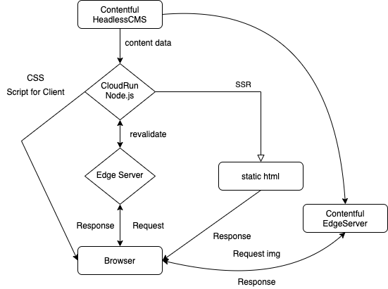
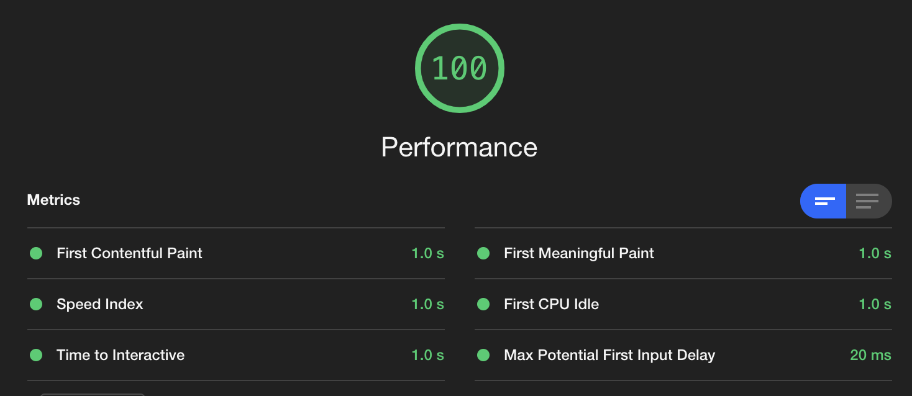
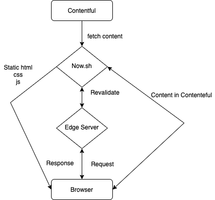
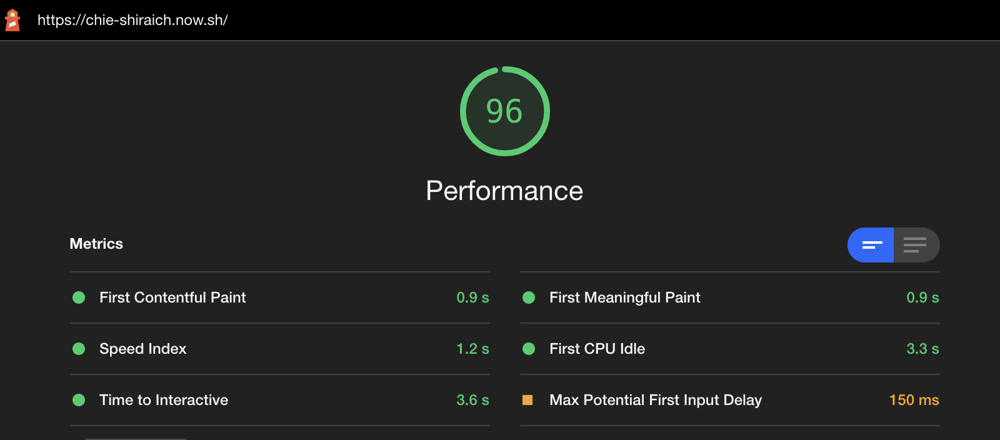
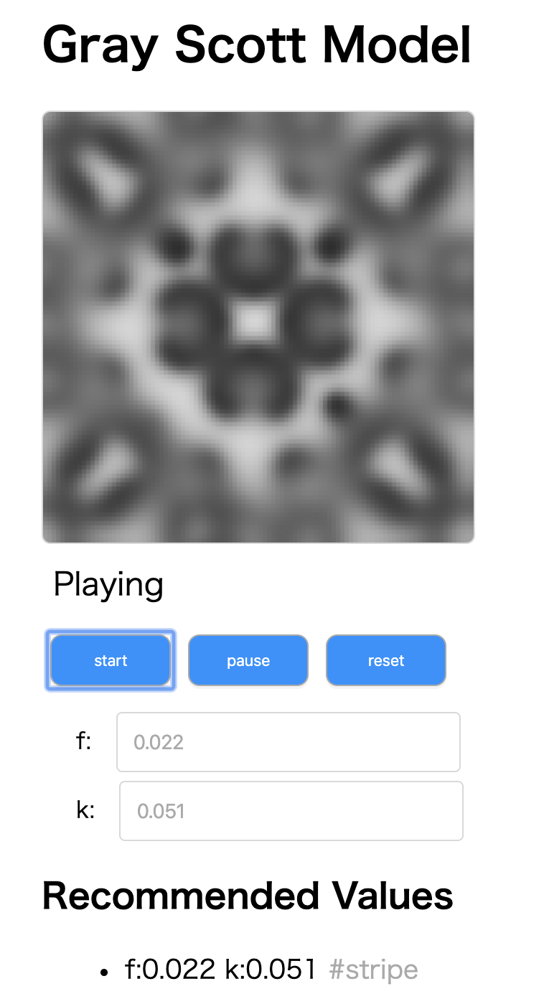

About Me
name: Shinobu Hayashi (林 仁) aka しにゃい
Web ( server | browser | edge )-side developer
Web developer in Nikkei (internship student)
A Student in University of Tokyo, majoring in Environmental Engineering and System Theory.
- Twitter: Shinyaigeek
- GitHub: Shinyaigeek
- Blog: しにゃいの学習帳 https://shinyaigeek.dev
Interest
- Web Performance
- I/O Cost. CDN/Band width in Network/Isomorphic SSR/Cache strategy/bundle size
- Runtime Cost. JavaScript Performance/DOM rendering Performance/Isomorphic SSR
- Improvement DX(Develper Experience)
- Web Accesibility
- System Theoritical Visualization, Simulation(eg Fluid mechanics, Self-Organizing model)
- Visualize and Measure and Improvement Performance
- Web technology and ecosystem
- Runtime Friendly JavaScript, V8's optimisation
Works
しにゃいの学習帳(My own Tech Blog)

GCP CloudRun/JSX(as template)/Node.js/webpack/TypeScript/CloudFlare
This System can make web page DYNAMICALLY
TTFB is bottleneck in SSR, but properly Cache strategy can eliminate this problem
(WIP) lit JSX
This library lets devs write lit-html with JSX(fully typed).
This compile Pure Functional Component by JSX into html-base template-literal in lit-html.
- [DONE] parse TypeScript/JavaScript to Abstract Syntax Tree
- [DONE] justify some specific syntax in JSX(such as className, onClick, style, etc...)
- [DONE] handle User Defined JSX Component as Function
- [WIP] extend types of lit-html
- [WIP] provide as babel-plugin
(WIP) Illustrator's Portfolio

Now.sh/React/TypeScript/Sass/Workbox/Contentful/parcel
This System enables non-developper to update website easily
prevent regression with light house CI
Illustrator's portfolio site is Gallery, so image occupies most of band width.I deel with this problem with CDN and lazy load
Gray Scott Modeling

Gray-Scott model is one of the self orgnization model, which is one area of System Theory
There is a lot of cells, and each cells act and make effects on each other, and then, some pattern will appear as Emergence
nptweet
This is command line tool for tweet.
Finder
This is the system to automate the step that devs keep tech article from feedly to GoogleKeep. This is running with node.js, now.sh.
Lightning Talk @サマーインターン前にツヨツヨになっちゃおうの会
(for Web frontend beginers)